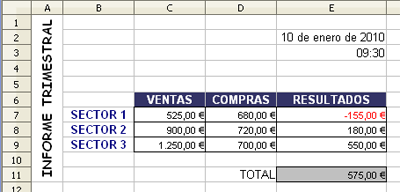
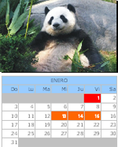

Hojas de cálculo
3.2. Otros elementos
Importante
En una hoja de cálculo podemos insertar otros elementos como son: imágenes, vídeo y sonido, objetos, gráficos y marcos flotantes.
En el menú "Insertar" hay un grupo de utilidades que merecen especial mención. Unos por maquetación y otros por visualización.
- La inserción de imágenes, vídeo, sonido y objetos no sólo es cuestión de maquetación, a veces son elementos necesarios para definir una hoja de cálculo.
- Los gráficos son una parte muy importante de las hojas de cálculo. Permiten visualizar resultados, realizar análisis comparativos y mostrar series de datos y valores.
- El uso del marco flotante es similar al que se hace con este elemento en lenguaje HTML, pudiendo mantenerse en toda la hoja de cálculo aunque varíe el resto del contenido.
Ejercicio Resuelto
Volvemos al ejercicio del apartado anterior. En este caso, intenta reproducir esta pantalla en la hoja de cálculo trabajando con distintos formatos de datos en OOo.
Guarda la hoja con el nombre informe.ods, en los siguientes temas también lo utilizarás.

Curiosidad
Una utilidad de las hojas de cálculo es la realización de calendarios.
En la página web de las plantillas de OpenOffice.org, encontrarás muchos ejemplos como el de la figura que tienen imágenes, marcos flotantes y todo tipo de objetos.

Calendario
Plantilla de OpenOffice.org Templates
Plantilla de OpenOffice.org Templates
Obra publicada con Licencia Creative Commons Reconocimiento No comercial Compartir igual 4.0